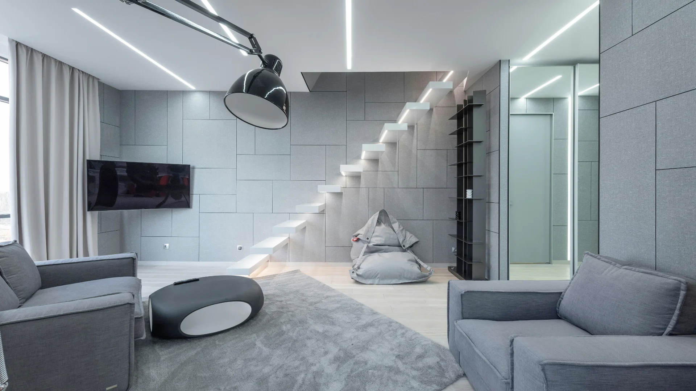

Bikin Kelas Makin Asik: Ketika Desain Kampus Memantik Ide-Ide Segar

📌 Ringkasan Inti
Transformasi ruang perkuliahan di Portal Kampus memadukan konfigurasi meja-kursi modular, ekosistem digital cerdas, dan area diskusi tanpa sekat. Konsep ini dirancang untuk mendobrak kekakuan kelas konvensional, meningkatkan keaktifan diskusi mahasiswa, serta menumbuhkan proyek riset kreatif terapan.
- Tata ruang kelas fleksibel memungkinkan perubahan formasi dari kuliah umum ke diskusi melingkar kurang dari dua menit.
- Infrastruktur smart campus dilengkapi jaringan Wi-Fi 6 berkecepatan tinggi, port pengisian daya di tiap meja, dan sensor reservasi ruangan pintar.
- Ruang kelas hybrid terintegrasi kamera auto-tracking AI dan mikrofon gantung 360 derajat untuk koneksi kuliah virtual tanpa hambatan.
- Dinding kaca whiteboard wipe-clean memfasilitasi visualisasi ide rumus dan sketsa riset spontan antarmahasiswa.
- Pencahayaan alami dan panel akustik penyerap gema menjaga kenyamanan mata dan telinga sepanjang waktu perkuliahan.
- Tabel Perbandingan Konsep Ruang Konvensional vs Modular
- Dari Ruang Kuliah Kaku ke Konsep Fleksibel Berorientasi Mahasiswa
- Filosofi Desain Kolaboratif yang Bikin Mahasiswa Betah
- Teknologi Cerdas yang Mendukung di Balik Layar
- Ruang Kuliah Hybrid yang Serba Mulus Tanpa Hambatan
- Tantangan Akustik dan Evaluasi Penerapan di Kampus
- Kesimpulan Praktis: Masa Depan Pendidikan di Ruang Kolaboratif
Perubahan pola belajar generasi masa kini menuntut transformasi ruang perkuliahan dari deretan bangku kaku menjadi ekosistem belajar yang lincah dan membebaskan imajinasi. Di Portal Kampus, inovasi fasilitas fisik menjadi pilar penting dalam mewujudkan pendidikan tinggi yang relevan dan menggairahkan.
Era kuliah yang serba duduk tegak mendengarkan dosen berceramah dua jam penuh sudah lewat masanya. Sekarang kampus bukan cuma tempat menyerap materi hafalan, melainkan ruang interaksi sosial-akademik di mana ide-ide berani saling bertukar dan berpadu antarbidang studi.
Tabel Perbandingan Konsep Ruang Konvensional vs Modular
Untuk memudahkan civitas akademika dan calon mahasiswa memahami lompatan fasilitas ruang belajar, berikut rangkuman komparasi teknis antara model auditorium lama dan kelas modular Portal Kampus:
| Aspek Ruang Belajar | Auditorium Konvensional | Ruang Kelas Modular Portal Kampus |
|---|---|---|
| Tata Letak Meja & Kursi | Paten dibaut ke lantai, model berundak kaku | Modular beroda fleksibel, mudah disusun melingkar/kelompok |
| Arah Pola Komunikasi | Monolog 1 arah dosen ke mahasiswa dari podium | Diskusi dua arah interaktif dan kolaborasi antartim |
| Fasilitas Daya & Gadget | Stopkontak terbatas di sudut dinding tertentu | Power outlet & USB fast-charging di setiap meja |
| Dukungan Kelas Hybrid | Hanya proyektor statis dan mic podium standar | Kamera auto-tracking AI, mic gantung 360° & smart board |
| Kenyamanan Akustik & Cahaya | Gema ruangan tinggi, cepat memicu kantuk | Panel akustik penyerap gema, pencahayaan alami sehat |
| Efektivitas Belajar | Model Lama (Fokus mendengarkan) | Aktif & Kolaboratif (Pemecahan studi kasus) |
Dari Ruang Kuliah Kaku ke Konsep Fleksibel Berorientasi Mahasiswa
Dulu auditorium bertingkat memang praktis buat mengumpulkan ratusan orang dalam satu sesi. Namun kelemahannya sangat terasa: interaksi berjalan satu arah dan mahasiswa kesulitan saat ingin berdiskusi cepat dengan rekan di samping mereka.
Di Portal Kampus, kami mereformasi sudut pandang tersebut. Waktu meja gampang digeser sesuai kebutuhan tim, dinding kaca bisa dicoret-coret ide rumus, dan colokan listrik tersedia di mana-mana, ngobrol santai saat jeda kuliah pun bisa bertransformasi menjadi ide penelitian atau rintisan startup baru.

Filosofi Desain Kolaboratif yang Bikin Mahasiswa Betah
Gedung-gedung perkuliahan Portal Kampus yang baru dirancang dengan menghilangkan sekat-sekat isolasi. Meja modular dapat dirangkai menjadi meja bundar besar untuk sesi brainstorming tim, atau dipisahkan secara mandiri saat mahasiswa membutuhkan konsentrasi belajar tinggi.
- Fleksibilitas Konfigurasi Meja: Meja modular beroda dapat dirangkai kembali ke formasi kelompok hanya dalam tempo kurang dari dua menit tanpa memerlukan bantuan teknisi.
- Dinding Kaca Brainstorming: Dinding pembatas ruangan memanfaatkan material whiteboard kaca yang bebas dicoret rumus sains, alur flowchart logika, hingga sketsa antarmuka desain.
- Kenyamanan Ergonomis Maksimal: Kursi berventilasi dengan penopang tulang belakang ergonomis menjaga postur tubuh mahasiswa tetap segar selama workshop intensif.
- Pencahayaan Alami Sehat: Panel jendela kaca ganda menyaring panas namun membiarkan cahaya matahari alami masuk, meredakan ketegangan mata dan menghemat energi pendingin ruangan.
Ingin Rasakan Pengalaman Kuliah di Kampus Masa Depan?
Portal Kampus membuka pendaftaran mahasiswa baru tahun akademik 2026/2027 dengan jalur beasiswa prestasi, kurikulum berbasis industri, dan akses penuh ke fasilitas laboratorium riset mutakhir.
Teknologi Cerdas yang Mendukung di Balik Layar
Kenyamanan belajar bukan sekadar kursi empuk dan meja rapi, melainkan juga keandalan infrastruktur digital. Seluruh area ruang kelas Portal Kampus terhubung langsung dengan jaringan Wi-Fi 6 enterprise berkecapatan gigabit dengan sistem pengatur lalu lintas data adaptif.
Melalui aplikasi kampus terpadu, mahasiswa dapat memantau ketersediaan pod belajar mandiri, ruang diskusi kelompok, hingga slot studio multimedia secara real-time langsung dari gawai mereka.
Ruang Kuliah Hybrid yang Serba Mulus Tanpa Hambatan
Saat ada rekan mahasiswa yang tengah melaksanakan riset lapangan di luar daerah atau praktisi internasional yang memberikan kuliah tamu dari benua lain, ruang kuliah hybrid Portal Kampus siap menghubungkan kedua pihak secara instan.
Kamera bersensor pelacak gerak otomatis (AI tracking) dan susunan mikrofon gantung 360 derajat memastikan suara dan gestur pembicara tertangkap secara jernih, menghadirkan atmosfer pembelajaran jarak jauh yang setara dengan kehadiran fisik.
"Pendidikan bukan sekadar transfer wawasan di ruang tertutup, melainkan penciptaan ekosistem interaksi yang menginspirasi mahasiswa berpikir kritis, berkolaborasi tanpa sekat, dan melahirkan solusi nyata bagi masyarakat."
Tantangan Akustik dan Evaluasi Penerapan di Kampus
Penerapan ruang belajar terbuka tanpa sekat tebal tentu memiliki tantangan tersendiri, utamanya pada pengelolaan kebisingan vokal ketika beberapa kelompok diskusi aktif berbicara secara bersamaan.
Menjawab tantangan tersebut, tim arsitektur kampus memasang panel akustik berbasis serat ramah lingkungan di bagian plafon dan dinding strategis, serta karpet antistatis khusus peredam hentakan kaki. Hasil pengukuran menunjukkan tingkat kebisingan latar tetap berada di bawah ambang batas kenyamanan akademis 45 desibel.
Kesimpulan Praktis: Masa Depan Pendidikan di Ruang Kolaboratif
Menata ruang belajar kampus masa depan adalah investasi jangka panjang untuk mencetak talenta unggul yang terbiasa berkolaborasi, berani mengemukakan argumentasi, dan tangkas menghadapi kompleksitas dunia kerja modern.
Portal Kampus berkomitmen terus memperluas laboratorium simulasi imersif berbasis Virtual Reality (VR) dan studio inovasi kecerdasan buatan, guna memastikan setiap mahasiswa memiliki panggung terbaik untuk menggapai prestasi terbaik mereka.
Pertanyaan Seputar Inovasi Ruang Belajar Kampus
Ruang kelas modular dirancang fleksibel dengan furnitur beroda dan partisi dinamis yang memudahkan perpindahan cepat dari format kuliah dosen ke diskusi kelompok kecil tanpa membuang waktu.
Ya, seluruh ruang kelas inovasi telah terintegrasi dengan kamera pelacak gerak otomatis, mikrofon 360 derajat, dan smart board digital yang terhubung langsung ke portal learning management system kampus.
Mahasiswa cukup menggunakan aplikasi mobile Portal Kampus untuk memeriksa ketersediaan ruangan secara real-time dan melakukan reservasi langsung menggunakan akun civitas akademika mereka.